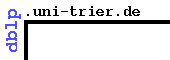

Update: I defended my thesis and graduated in July-August 2013. Starting October, 2013 I work at Twitter.
I am was a PhD candidate at the Language
Technologies Institute in the School of Computer Science at Carnegie Mellon
University. My advisor is Prof. William
Cohen.
My primary research interest is in the use of machine learning for network
analysis and text mining. Specifically, I am interested in latent topic and
blockstructure analysis using topic models and stochastic block models. My
research is motivated by a need to address the disquietude brought about by
the overwhelming complexity of reality. Graphical models allows us to explain and understand complex real
world phenomena using grok-able approximations. I am especially interested in using them to uncover patterns in human interaction and communicaiton.
About me
I am a news junkie who grew up in Bangalore, India where the dosas are reason enough for living. After graduating from PESIT with a Bachelor's degree in Computer Science and Engineering in 2003, I worked on text categorization and information extraction problems at the Applied Research division at Yahoo! for four years before starting in the PhD program at the LTI. My very supportive wife and I have been living in Pittsburgh since 2007; ergo I am a Steelers fan in addition to being a fan of the Indian cricket team.In my non-researcher avatar, I try to practice Vipassana meditation and adopt a minimalist lifestyle.
Research Projects
Code
Code for most of my work is on github. A lot of is rough around the edges. Please email me if you notice anything's broken.
Recent Activities
Publications
2014
Block-LDA: Jointly Modeling Entity-Annotated Text and Entity-Entity Links
Ramnath Balasubramanyan and William W. Cohen.
Chapter in Handbook of Mixed Membership Models and Their Applications (Editors: Edoardo M. Airoldi, David Blei, Elena A. Erosheva, Stephen E. Fienberg)
2013
Specifying Latent Structure Characteristics in Mixed-membership Models [pdf | slides]
Ramnath Balasubramanyan.
Thesis document. Language Technologies Institute, School of Computer Science, Carnegie Mellon University.
From Topic Models to Semi-Supervised Learning: Biasing Mixed-membership Models to Exploit Topic-Indicative Features in Entity Clustering [pdf | bib]
Ramnath Balasubramanyan, Bhavana Dalvi Mishra and William W. Cohen.
In ECML PKDD 2013, European Conference on Machine Learning and Principles and practice of Knowledge Discovery in Databases.
“w00t! feeling great today!” Chatter in Twitter: Identification and Prevalence [pdf | bib]
Ramnath Balasubramanyan and Alek Kolcz.
In ASONAM 2013, The 2013 IEEE/ACM International Conference on Advances in Social Networks Analysis and Mining.
Inferring Actor Communities from Videos[pdf | bib]
Sumit Negi, Ramnath Balasubramanyan and Santanu Chaudhury.
In Interspeech 2013.
Regularization of Latent Variable Models to Obtain Sparsity [pdf | bib]
Ramnath Balasubramanyan and William W. Cohen.
In SDM 2013, SIAM Conference on Data Mining.
2012
Characterizing User-Subgroups in Flickr Group : A Block LDA Based Approach [pdf | bib]
Sumit Negi, Ramnath Balasubramanyan and Santanu Chaudhury.
In ICPR 2012, International Conference on Pattern Recognition, Tsukuba Science City, Japan.
Entropic Regularization of Mixed-membership Network Models using Pseudo-observations [pdf | bib]
Ramnath Balasubramanyan and William W. Cohen.
In MLG 2012: Workshop on Mining and Learning with Graphs at ICML 2012.
Evaluating Joint Modeling of Yeast Biology Literature and Protein-Protein Interaction Networks [pdf | bib]
Ramnath Balasubramanyan, Kathryn Rivard, William W. Cohen, Jelena Jakovljevic and John Woolford.
In BioNLP 2012: Workshop at NAACL 2012.
Modeling Polarizing Topics: When Do Different Political Communities Respond Differently to the Same News? [pdf | bib]
Ramnath Balasubramanyan, William W. Cohen, Doug Pierce and David Redlawsk.
In ICWSM 2012: Proceeedings of the fourth International AAAI Conference on Weblogs and Social Media.
2011
What pushes their buttons? Predicting comment polarity from the content of political blog posts [pdf | bib]
Ramnath Balasubramanyan, William W. Cohen, Doug Pierce and David Redlawsk.
In Workshop on Language in Social Media (LSM 2011) at ACL-2011
Combining stochastic block models and topic models [pdf | bib]
Ramnath Balasubramanyan and William W. Cohen.
In SDM 2011, SIAM Conference on Data Mining.
A shorter version was presented at the ICML 2010: Workshop on Topic Modeling [pdf | bib].
2010
Node Clustering in Graphs: An Empirical Study [pdf | bib]
Ramnath Balasubramanyan, Frank Lin and William W. Cohen.
In NIPS 2010: Workshop on Networks Across Disciplines in Theory and Applications
From Tweets to Polls: Linking Text Sentiment to Public Opinion Time Series [pdf | bib].
Brendan O'Connor, Ramnath Balasubramanyan, Bryan R. Routledge, and Noah A. Smith.
In ICWSM 2010: Proceeedings of the fourth International AAAI Conference on Weblogs and Social Media.
Press coverage - Pittsburgh Tribune-Review, CNN Tech, Economic Times BBC Radio 5 (at 13:00) and others.
2009
From Episodes to Sagas: Understanding the News by Identifying Temporally Related Story Sequences [pdf | bib]
Ramnath Balasubramanyan, Frank Lin, William Cohen, Matthew Hurst and Noah A. Smith
In ICWSM '09: Proceeedings of the third International AAAI Conference on Weblogs and Social Media (Poster).
Information Leaks and Suggestions: A Case Study using Mozilla Thunderbird [pdf | bib]
Vitor Carvalho, William Cohen and Ramnath Balasubramanyan
In CEAS '09: Conference on Email and Anti-Spam
2008
Activity-centred Search in Email [pdf | bib]
Einat Minkov, Ramnath Balasubramanya and William Cohen
In CEAS '08: Conference on Email and Anti-Spam
CutOnce- Recipient Recommendation and Leak Detection in Action [pdf | bib]
Ramnath Balasubramanyan, Vitor Carvalho and William Cohen
In The AAAI 2008 Workshop on Enhanced Messaging
Earlier
Document preprocessing for naive Bayes classification and clustering with mixture of multinomials [pdf | bib]
Dmitry Pavlov, Ramnath Balasubramanyan, Byron Dom, Shyam Kapur and Jignashu Parikh
In KDD '04: The tenth ACM SIGKDD international conference on Knowledge discovery and data mining (Poster).
Selected Coursework